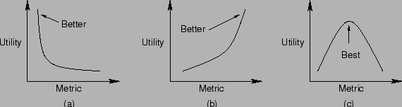

Next: Throughput และ Response Time
Up: ประสิทธิภาพของคอมพิวเตอร์
Previous: ความสามารถในการบริการของระบบ
Contents
Index
การพิจารณาตัววัดประสิทธิภาพ
การใช้งานประสิทธิภาพตัววัด สามารถแบ่งการพิจารณาการใช้งานตัววัดได้เป็น 3 ลักษณะ
- ยิ่งสูงยิ่งดี ระบบดังกล่าว ผู้ควบคุมต้องการค่าตัววัดที่สูง เช่น อัตราผลสำเร็จของงาน
- ยิ่งต่ำยิ่งดี ในระบบดังกล่าว ผู้ควบคุมต้องการค่าที่ต่ำ เช่น เวลาตอบสนอง
- อยู่ตรงกลางๆ จึงจะเหมาะสม ในระบบลักษณะดังกล่าว ไม่ว่าสูงหรือต่ำก็ไม่เหมาะสม ซึ่งถ้าอยู่ในช่วงกลางจะเหมาะสมที่สุด เช่น อัตราส่วนภาระงานของระบบ ควรจะอยู่ค่ากลางๆ เนื่องจากถ้าภาระงานมาก ผลเวลาตอบสนองก็สูง ถ้าภาระงานน้อยอัตราผลสำเร็จของงานก็ต่ำ
ในรูป 4.5 แสดงกราฟของทั้ง 3 กรณี
Figure 4.5:
อัตราผลสำเร็จที่สามารถทำได้ของระบบ
|

|
Vara Varavithya
2005-08-18